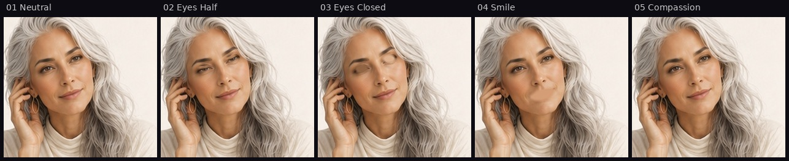
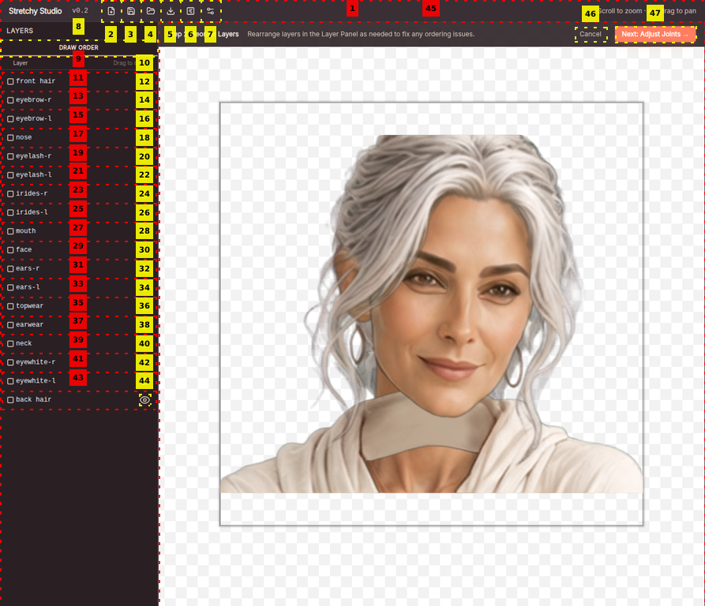
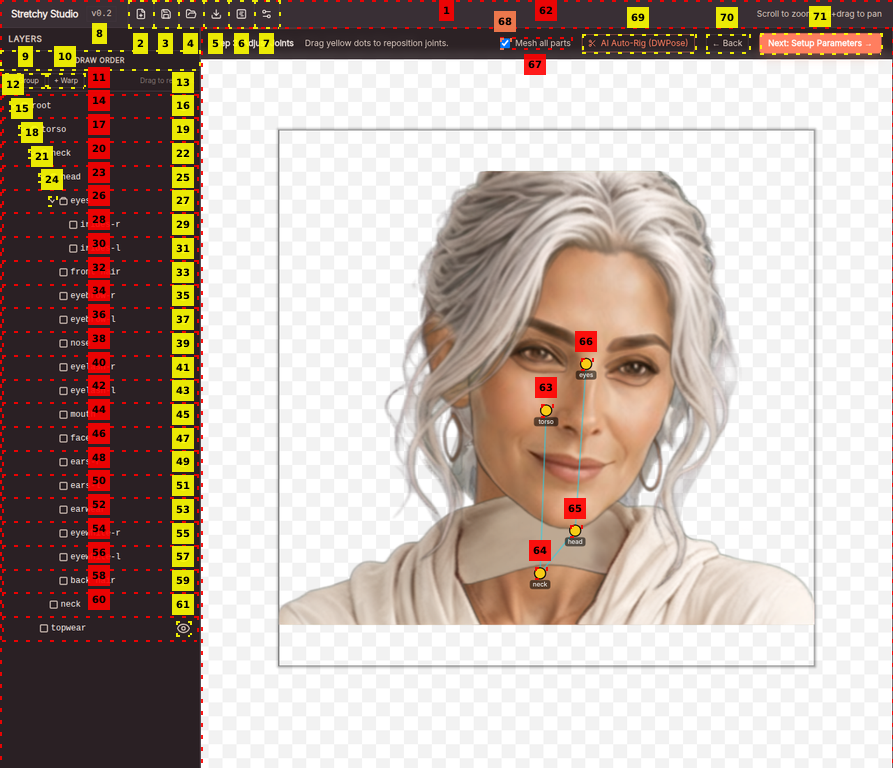
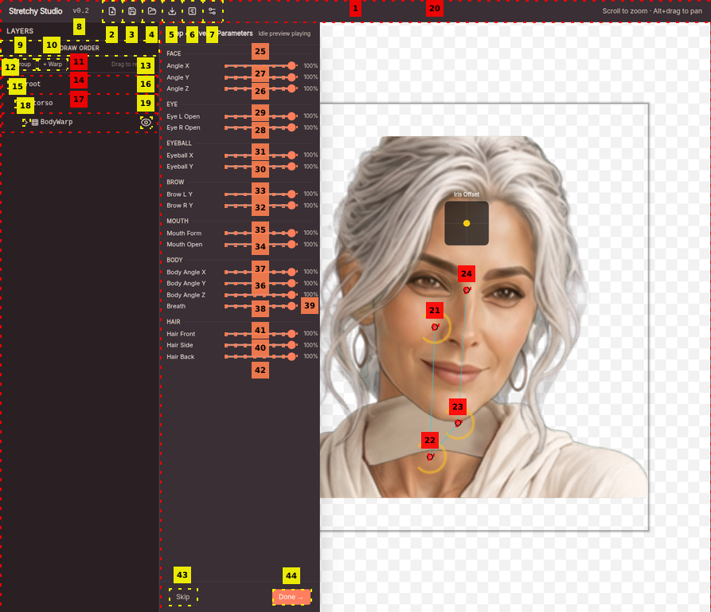
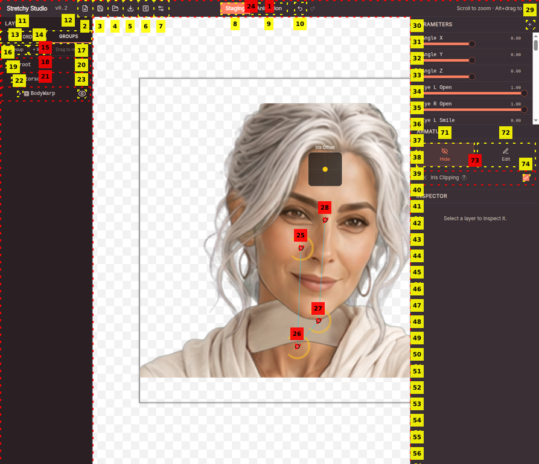

R&D Pipeline : See-through → Stretchy Studio → Auto-rig complet
780×700 Portrait frontal, cheveux attachés. Bonne base pour la décomposition automatique.

24 layers PSD généré Décomposition automatique : face, eyes, brows, mouth, hair front/back, body, accessories.

18/18 matched PSD importé, tous les layers reconnus et mappés automatiquement. Composite parfait.

Joints placés DWPose lent sans GPU Squelette torso → neck → head → eyes. Placement manuel possible en fallback.

40+ paramètres Rig complet généré automatiquement : Eye L/R Open, Mouth Form/Open, Angle X/Y/Z, Breath, Hair, Body.

Live preview .stretch exporté Tous les sliders actifs. Projet sauvegardé : eYa_AutoLive2D_v1.stretch
| Outil | Statut | Résultat sur eYa | Verdict |
|---|---|---|---|
| CartoonAlive (Alibaba) | Paper-only | Impossible à tester — aucun code publié | ❌ Inutilisable |
| See-through (shitagaki-lab) | Fonctionnel | 24 layers + PSD générés en ~3 min via API HuggingFace | ✅ Production-ready |
| Stretchy Studio (MangoLion) | Fonctionnel | 18 layers matchés, 40+ paramètres, .stretch exporté | ✅ Production-ready |
| DWPose ONNX (WASM) | Lent sans GPU | Fonctionne mais ~5 min en CPU-only | ⚠️ GPU recommandé |
Le projet .stretch est prêt. Ouvre-le dans Stretchy Studio pour tester les paramètres en temps réel.